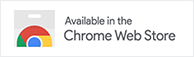

Share or Bookmark News Articles
With infinite news reports released daily, you’re bound to miss important information. For when you don’t have the time to read full articles, NewsTrackr allows you to bookmark articles you would want to read at leisure.. You can also share articles online.
Continue Watch
News Coverage
Want to catch up on world events? Stay updated stories from across the globe. By adding NewsTrackr to your New Tab, you can stream live news stories and watch news videos conveniently
Continue Personalized News
Recommendations
Interested in political news but not entertainment news? NewsTrackr traitors a unique and personalized newsfeed, based on your interests and preferences. Discover quality content from around the web.
Continue
Add NewsTrackr To Your New Tab Now!
Free installation.
No settings or customizations required.